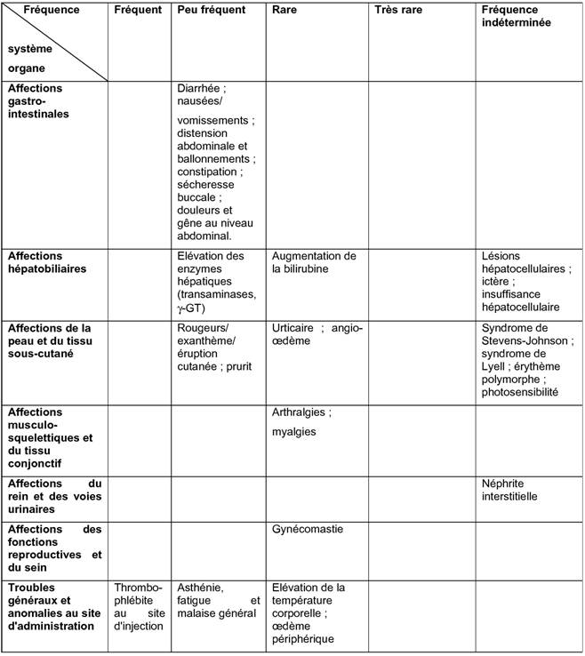

RÉSUMÉ DES CARACTÉRISTIQUES DU PRODUIT
ANSM - Mis à jour le : 05/05/2014
PANTOPRAZOLE ACTAVIS 40 mg, poudre pour solution injectable (IV)
2. COMPOSITION QUALITATIVE ET QUANTITATIVE
Pantoprazole .................................................................................................................................... 40 mg
(Sous forme de sesquihydrate de sodium)
Pour un flacon.
Excipients:
Chaque flacon contient 5 mg de citrate de sodium dihydraté et d'hydroxyde de sodium qsp.
Pour la liste complète des excipients, voir la rubrique 6.1.
Poudre pour solution injectable.
Poudre presque blanche ou blanche.
Pour la solution reconstituée avec 10 ml de solution de NaCl à 0,9 %, le pH est d'environ 10 et l'osmolalité d'environ 382 mOsm/kg.
Pour la solution reconstituée avec l'ajout de 100 ml de solution de NaCl à 0,9 % ou de solution de glucose à 5 %, le pH est respectivement d'environ 9 et 8,5.
4.1. Indications thérapeutiques
· Œsophagite par reflux gastro-œsophagien.
· Ulcères gastrique et duodénal.
· Syndrome de Zollinger-Ellison et autres situations hypersécrétoires pathologiques.
4.2. Posologie et mode d'administration
Ce médicament doit être administré par un professionnel de santé et sous surveillance médicale appropriée.
L'administration par voie intraveineuse du pantoprazole est recommandée uniquement lorsque la voie orale est impossible. Des données sont disponibles sur l'utilisation intraveineuse de pantoprazole pour une durée allant jusqu'à 7 jours. Par conséquent, dès que le traitement oral est possible, l'administration intraveineuse de pantoprazole doit être interrompue et remplacée par la prise orale de 40 mg de pantoprazole.
Dose recommandée:
Ulcères gastrique et duodénal, œsophagite par reflux gastro-œsophagien
La dose recommandée par voie intraveineuse est un flacon de pantoprazole (40 mg) par jour.
Syndrome de Zollinger-Ellison et autres situations hypersécrétoires pathologiques
Dans le cadre du traitement au long cours du syndrome de Zollinger-Ellison et des autres situations hypersécrétoires pathologiques, la posologie initiale est de 80 mg de pantoprazole par jour. Celle-ci peut être augmentée ou diminuée en focntion des besoins, selon les résultats des mesures du débit acide. Dans le cas d'une posologie supérieure à 80 mg/jour, la dose devra être fractionnée en deux administrations. Une augmentation temporaire de la posologie au-delà de 160 mg de pantoprazole par jour est possible, mais ne devrait pas excéder la durée nécessaire à la maîtrise de la sécrétion acide.
Si un contrôle rapide de la sécrétion acide est nécessaire, une dose initiale de 2 x 80 mg de pantoprazole par voie intraveineuse est suffisante pour obtenir une diminution de la production acide dans la plage ciblée (<10 mEq/h) dans un délai d'une heure pour la majorité des patients.
Populations spéciales
Population pédiatrique:
L'expérience clinique chez les enfants est limitée. Par conséquent, l'administration de pantoprazole par voie intraveineuse n'est pas recommandée chez les patients de moins de 18 ans jusqu'à ce que des données supplémentaires soient disponibles.
Insuffisance hépatique:
La dose maximale journalière de 20 mg de pantoprazole (la moitié d'un flacon de 40 mg) ne doit pas être dépassée chez l'insuffisant hépatique sévère.
Insuffisance rénale:
Aucun ajustement de la dose n'est nécessaire chez l'insuffisant rénal.
Patients âgés
Aucune adaptation de la dose n'est nécessaire chez le sujet âgé.
Mode d'administration:
Dissoudre la poudre en injectant dans le flacon de lyophilisat 10 ml de solution injectable de chlorure de sodium à 9 mg/ml (0,9 %). Pour les instructions de préparation voir rubrique 6.6.
La solution reconstituée peut être administrée directement, ou diluée dans 100 ml de solution de chlorure de sodium à 9 mg/ml (0,9 %), ou une solution injectable de glucose à 55 mg/ml (5 %).
La solution doit être utilisée dans les 12 heures suivant sa préparation (Voir rubrique 6.3.).
Le médicament doit être administré par voie intraveineuse en 2 à 15 minutes.
Hypersensibilité connue au pantoprazole, aux benzimidazoles substitués, ou à l'un des excipients.
4.4. Mises en garde spéciales et précautions d'emploi
En présence de tout symptôme alarmant (par exemple perte de poids involontaire importante, vomissements récurrents, dysphagie, hématémèse, anémie ou méléna) et en cas de suspicion ou de présence d'un ulcère gastrique, une affection maligne doit être écartée car la prise de pantoprazole peut atténuer les symptômes et par conséquent en retarder le diagnostic.
Des examens complémentaires doivent être envisagés si les symptômes persistent malgré l'administration d'un traitement approprié.
Insuffisance hépatique
Chez les patients présentant une insuffisance hépatique sévère, un bilan des enzymes hépatiques devra être réalisé régulièrement pendant le traitement. En cas d'élévation de celles-ci, le traitement devra être interrompu (voir rubrique 4.2).
Prise concomitante d'atazanavir
L'administration concomitante d'atazanavir avec un inhibiteur de la pompe à protons n'est pas recommandée (voir rubrique 4.5.) Si l'association d'atazanavir et d'un inhibiteur de la pompe à protons est jugée indispensable, une surveillance clinique régulière est recommandée associée à une augmentation de la posologie d'atazanavir à 400 mg par 100 mg de ritonavir. La posologie quotidienne maximale de pantoprazole recommandée est de 20 mg.
Infections gastro-intestinales d'origine bactérienne
Comme tous les inhibiteurs de la pompe à protons, le pantoprazole, peut favoriser le développement de bactéries intragastriques. Le traitement par pantoprazole peut conduire à une légère augmentation du risque d'infections gastro-intestinales d'origine bactérienne (par exemple par Salmonella et Campylobacter).
Sodium
Ce médicament contient moins de 1 mmol de sodium (23 mg) par flacon, c'est-à-dire qu'il est considéré comme étant « sans sodium ».
4.5. Interactions avec d'autres médicaments et autres formes d'interactions
Effet du pantoprazole sur l'absorption d'autres médicaments
En raison de l'inhibition prolongée de la sécrétion d'acide gastrique, le pantoprazole peut réduire l'absorption des médicaments dont la biodisponibilité dépend du pH gastrique, tels que certains antifongiques azolés (kétoconazole, l'itraconazole, le posaconazole) et d'autres médicaments tels que l'erlotinib.
+ Traitement antirétroviral (atazanavir)
Une administration concomitante d'atazanavir et d'autres médicaments anti-VIH dont l'absorption est pH-dépendante avec les inhibiteurs de la pompe à protons peut entraîner une diminution substantielle des concentrations plasmatiques des médicaments anti-VIH et avoir un impact sur l'efficacité de ces traitements.
Une administration concomitante d'atazanavir et d'inhibiteurs de la pompe à protons n'est donc pas recommandée. (Voir rubrique 4.4.)
+ Anticoagulants coumariniques (phenprocoumone ou warfarine)
Bien qu'aucune interaction n'ait été observée lors de l'administration simultanée d'inhibiteurs de la pompe à protons et de phenprocoumone ou de warfarine, au cours des études pharmacocinétiques, des cas isolés de modification de l'INR (rapport normalisé international) ont été signalés au cours d'un traitement concomitant, après commercialisation. Par conséquent, il est recommandé de surveiller le temps de prothrombine/l'INR des patients traités par des anticoagulants coumariniques (comme la phenprocoumone ou la warfarine), au début et à l'arrêt du traitement, ou en cas d'administration intermittente de pantoprazole.
Etudes sur les autres interactions médicamenteuses
Le pantoprazole est largement métabolisé au niveau du foie par le système enzymatique du cytochrome P450. La voie métabolique principale est la déméthylation par le CYP2C19 et les autres voies métaboliques comprennent l'oxydation par le CYP3A4.
Aucune interaction cliniquement significative n'a été observée au cours d'études spécifiques portant notamment sur la carbamazépine, le diazépam, le glibenclamide, la nifédipine et un contraceptif oral composé de lévonorgestrel et d'éthinylestradiol.
Les résultats provenant de diverses études sur les interactions montrent que le pantoprazole n'agit pas sur le métabolisme des substances actives métabolisées par le CYP1A2 (caféine, théophylline), par le CYP2C9 (piroxicam, diclofénac, naproxène), par le CYP2D6 (métoprolol), par le CYP2E1 (éthanol) et n'interfère pas avec le rôle de la P-glycoprotéine dans l'absorption de la digoxine.
Il n'existe pas d'interactions avec les antiacides administrés de manière concomitante.
Des études d'interactions ont été menées sur l'administration concomitante de pantoprazole et de différents antibiotiques (clarithromycine, métronidazole, amoxicilline). Aucune interaction cliniquement pertinente n'a été observée.
Il n'y a que très peu de données concernant l'utilisation du pantopazole chez la femme enceinte. Au cours des études de reproduction chez l'animal, des signes de fœtotoxicité ont été observés (voir rubrique 5.3). Le risque potentiel chez l'être humain n'est pas connu. En conséquence, le pantoprazole ne doit être administré au cours de la grossesse qu'en cas de réelle nécessité.
Les études effectuées chez l'animal ont mis en évidence une excrétion du pantoprazole dans le lait maternel.
Une excrétion dans le lait maternel humain a été rapportée. Par conséquent, la décision de poursuivre/d'arrêter l'allaitement ou de poursuivre/d'arrêter le traitement par pantoprazole doit être prise en tenant compte du bénéfice de l'allaitement pour l'enfant et du bénéfice du traitement par pantoprazole pour la mère.
4.7. Effets sur l'aptitude à conduire des véhicules et à utiliser des machines
Des effets indésirables, tels que des vertiges ou des troubles de la vision, peuvent survenir (voir rubrique 4.8).
Les patients présentant ce type d'effet indésirable ne doivent pas conduire de véhicules ni utiliser de machines.
Environ 5 % des patients sont susceptibles de présenter des effets indésirables (EI). Les effets indésirables les plus fréquemment signalés sont la diarrhée et les céphalées, survenant tous deux chez environ 1 % des patients.
Les effets indésirables signalés avec le pantoprazole sont classés dans le tableau ci-dessous selon l'ordre de fréquence suivant:
Très fréquents (≥1/10); fréquents (≥1/100 à <1/10); peu fréquents (≥1/1 000 à <1/100); rares (≥1/10 000 à <1/1 000); très rares (<1/10 000), fréquence indéterminée (ne peut être estimée d'après les données disponibles).
Pour tous les effets indésirables notifiés après commercialisation, il n'est pas possible d'imputer cet ordre de fréquence, par conséquent ils sont listés comme survenant à une fréquence « indéterminée ».
Dans chaque groupe de fréquence, les effets indésirables sont présentés par ordre de gravité décroissante.
Tableau 1. Effets indésirables du pantoprazole rapportés au cours des études cliniques et ceux notifiés après commercialisation.

Aucun symptôme de surdosage n'a été rapporté chez l'homme.
Une exposition systémique jusqu'à 240 mg de pantoprazole administré par voie intraveineuse sur 2 minutes a bien été tolérée. Comme le pantoprazole est fortement lié aux protéines, il n'est pas aisément dialysable.
En cas de surdosage associé à des signes cliniques d'intoxication, aucune recommandation thérapeutique spécifique ne peut être donnée à l'exception d'un traitement symptomatique et de soutien.
5. PROPRIETES PHARMACOLOGIQUES
5.1. Propriétés pharmacodynamiques
Classe pharmacothérapeutique: INHIBITEURS DE LA POMPE A PROTONS, Code ATC: A02BC02.
Mécanisme d'action
Le pantoprazole est un benzimidazole substitué qui inhibe la sécrétion de l'acide chlorhydrique dans l'estomac par blocage spécifique de la pompe à protons de la cellule pariétale gastrique.
Le pantoprazole est transformé sous forme active dans l'environnement acide des cellules pariétales dans lequel il inhibe la pompe à protons H+/K+-ATPase, c'est-à-dire la phase terminale de production d'acide chlorhydrique dans l'estomac. L'inhibition est dose-dépendante et affecte à la fois la sécrétion acide basale et la sécrétion acide stimulée. Chez la plupart des patients, la disparition des symptômes est obtenue en deux semaines. Comme pour d'autres inhibiteurs de la pompe à protons et d'autres inhibiteurs des récepteurs H2, le traitement par pantoprazole réduit l'acidité dans l'estomac et entraîne ainsi une augmentation de la gastrinémie proportionnelle à la réduction de l'acidité. L'augmentation de la gastrine est réversible. Etant donné que le pantoprazole se lie à l'enzyme distale au niveau du récepteur cellulaire, il peut inhiber la sécrétion d'acide chlorhydrique quelle que soit la nature du stimulus (acétylcholine, histamine, gastrine). L'effet est identique, que le produit soit administré par voie orale ou intraveineuse.
La gastrinémie à jeun augmente sous pantoprazole. Dans la plupart des cas, lors des traitements de courte durée, elle ne dépasse pas les limites supérieures de la normale. Ces valeurs doublent le plus souvent lors des traitements au long cours. Toutefois, une augmentation excessive n'est rapportée que dans des cas isolés. Par conséquent, une augmentation légère à modérée du nombre de cellules endocrines spécifiques (ECL) dans l'estomac est observée dans une minorité de cas lors de traitements prolongés (similaire à une hyperplasie adénomatoïde). Cependant, selon les études menées jusqu'à présent, la formation de précurseurs carcinoïdes (hyperplasie atypique) ou de carcinoïdes gastriques tels que décrit chez l'animal n'a pas été observée chez l'être humain (voir rubrique 5.3.).
D'après les résultats des études menées sur des animaux, on ne peut pas exclure un effet sur les paramètres endocriniens de la thyroïde, lors de traitements prolongés (plus d'un an) par pantoprazole.
5.2. Propriétés pharmacocinétiques
Données pharmacocinétiques générales
Les données pharmacocinétiques restent constantes après une administration unique ou répétée. Pour des doses administrées variant de 10 à 80 mg, la cinétique plasmatique du pantoprazole est linéaire après administration orale et intraveineuse.
Distribution
La fixation du pantoprazole aux protéines plasmatiques est de 98 %. Le volume de distribution est de 0,15 l/kg.
Elimination
La substance est presque exclusivement métabolisée par le foie. La voie métabolique principale est la déméthylation par le CYP2C19, suivie d'une sulfoconjugaison; les autres voies métaboliques incluent l'oxydation par le CYP3A4. La demi-vie d'élimination plasmatique est d'environ 1 heure et la clairance d'environ 0,1 l/h/kg. Les cas de patients présentant un retard d'élimination sont peu nombreux. Etant donné que l'activation spécifique a lieu dans la cellule pariétale gastrique, il n'existe pas de corrélation entre la demi-vie d'élimination plasmatique et la durée d'action du produit.
L'élimination rénale représente la voie principale d'élimination des métabolites du pantoprazole (environ 80 %), le reste étant éliminé dans les fèces. Le principal métabolite retrouvé dans le plasma et les urines est le déméthylpantoprazole, sous forme sulfoconjugué. La demi-vie du métabolite principal (environ 1,5 heure) n'est pas supérieure à celle du pantoprazole.
Caractéristiques chez certains patients/populations particulières:
Environ 3 % de la population européenne ne possède pas d'enzyme CYP2C19 fonctionnelle et sont appelés des métaboliseurs lents. Chez ces individus, le métabolisme du pantoprazole se fait probablement par l'enzyme CYP3A4 principalement. Après administration d'une dose unique de 40 mg de pantoprazole, l'aire moyenne sous la courbe des concentrations plasmatiques en fonction du temps est environ 6 fois plus grande chez les métaboliseurs lents que chez les sujets munis d'une enzyme CYP2C19 fonctionnelle (métaboliseurs rapides). Les pics des concentrations plasmatiques moyennes sont augmentés de 60 %. Ces données n'ont aucune incidence sur la posologie du pantoprazole.
Aucune diminution de la dose n'est nécessaire lors de l'administration du pantoprazole à des patients atteints d'insuffisance rénale (y compris les patients dialysés). Comme chez le sujet sain, la demi-vie d'élimination du pantoprazole est courte. Seules de très faibles quantités de pantoprazole sont dialysées.
Bien que le principal métabolite ait une demi-vie légèrement allongée (2-3 h), l'excrétion reste rapide et aucune accumulation n'est donc observée.
Chez le patient cirrhotique (classes A et B de Child), malgré l'allongement de la demi-vie jusqu'à 7 à 9 h et l'augmentation de l'ASC d'un facteur 5 à 7, la concentration plasmatique maximale n'est que légèrement augmentée (x 1,5) comparativement au sujet sain.
La légère augmentation de l'ASC et de la Cmax observée chez le sujet âgé comparativement au sujet jeune n'a aucune incidence clinique.
Enfants
Après administration intraveineuse d'une dose unique de 0,8 ou 1,6 mg/kg de pantoprazole à des enfants âgés de 2 à 16 ans, il n'a pas été observé de corrélation significative entre la clairance et l'âge ou le poids. L'ASC et le volume de distribution étaient conformes aux données observées chez l'adulte.
5.3. Données de sécurité préclinique
Les données précliniques ne mettent en évidence aucun risque particulier chez l'homme, au vu des essais pharmacologiques de sécurité, de toxicité par administrations réitérées et de génotoxicité.
Au cours des études de carcinogénicité sur 2 ans chez le rat, des néoplasies neuro-endocriniennes ont été observées. En outre, des papillomes des cellules squameuses ont été observés dans l'estomac antérieur du rat. Le mécanisme entraînant la formation de carcinoïdes gastriques par les benzimidazoles substitués a été étudié de façon approfondie et l'on peut conclure qu'il s'agit d'une réaction secondaire à l'élévation massive de la gastrinémie chez le rat en cours de traitement. Durant les études sur 2 ans chez les rongeurs, une augmentation du nombre des tumeurs hépatiques a été observée chez le rat et la souris femelle, et a été interprétée comme liée à l'important taux de métabolisation hépatique du pantoprazole.
Une légère augmentation des transformations néoplasiques de la thyroïde a été observée dans le groupe de rats recevant la plus forte dose (200 mg/kg). L'apparition de ces néoplasies est associée aux modifications induites par le pantoprazole dans la dégradation de la thyroxine au niveau hépatique chez le rat. La dose thérapeutique chez l'humain étant faible, aucun effet indésirable sur la glande thyroïde n'est attendu.
Au cours des études de reproduction chez l'animal, des signes discrets de fœtotoxicité ont été observés à des doses supérieures à 5 mg/kg. Les recherches n'ont montré aucune action sur la fertilité ni d'effet tératogène.
Le passage transplacentaire a été étudié chez le rat et il a été mis en évidence qu'il augmentait avec l'avancement de la gestation. En conséquence, la concentration du pantoprazole chez le fœtus est brièvement augmentée avant la naissance.
Citrate de sodium dihydraté.
Hydroxyde de sodium (pour l'ajustement du pH).
Ce médicament ne doit pas être mélangé avec d'autres médicaments à l'exception de ceux mentionnés dans la rubrique 6.6.
Après reconstitution ou reconstitution et dilution, la stabilité physico-chimique a été démontrée pendant 12 heures à 25°C.
D'un point de vue microbiologique, le produit doit être utilisé immédiatement. S'il n'est pas utilisé immédiatement, la durée de conservation et les conditions avant utilisation sont sous la responsabilité de l'utilisateur.
6.4. Précautions particulières de conservation
A conserver à une température ne dépassant pas 25°C.
Conserver le flacon dans l'emballage extérieur à l'abri de la lumière.
Pour les conditions de conservation du médicament reconstitué et dilué, voir la rubrique 6.3.
6.5. Nature et contenu de l'emballage extérieur
Flacon en verre transparent de 15 ml, de type I, fermé par un bouchon en chlorobutyle et une capsule en aluminium, contenant 40 mg de poudre pour solution injectable.
Tailles des conditionnements: 1, 5, 10 ou 20 flacons
Toutes les présentations peuvent ne pas être commercialisées.
6.6. Précautions particulières d’élimination et de manipulation
On prépare une solution intraveineuse prête à l'emploi en injectant dans le flacon de lyophilisat 10 ml de solution de chlorure de sodium à 9 mg/ml (0,9 %) contenant la poudre lyophilisée. La solution reconstituée doit être limpide et incolore. La solution peut être soit administrée directement, soit après l'avoir mélangée dans 100 ml d'une solution injectable de chlorure de sodium à 9 mg/ml (0,9 %) ou d'une solution injectable de glucose à 50 mg/ml (5 %). Des récipients en verre ou en plastique doivent être utilisés pour la dilution.
Seuls les solvants mentionnés doivent être utilisés pour la préparation ou le mélange de PANTOPRAZOLE ACTAVIS 40 mg, poudre pour solution injectable.
Le médicament doit être administré par voie intraveineuse pendant 2 à 15 minutes.
Le contenu du flacon est destiné à une seule injection intraveineuse. Tout produit restant dans le flacon ou dont l'apparence visuelle a changé (par exemple, opalescence ou précipitation) doit être éliminé conformément à la réglementation en vigueur.
7. TITULAIRE DE L’AUTORISATION DE MISE SUR LE MARCHE
ACTAVIS GROUP PTC EHF
REYKJAVIKURVEGUR 76-78
220 HAFNARFJORDUR
ISLANDE
8. NUMERO(S) D’AUTORISATION DE MISE SUR LE MARCHE
· 494 871-8 ou 34009 494 871 8 9: Flacon en verre transparent de 15 ml (type I) contenant 40 mg de poudre pour solution injectable. Boîte de 1 falcon.
· 494 872-4 ou 34009 494 872 4 0: Flacon en verre transparent de 15 ml (type I) contenant 40 mg de poudre pour solution injectable. Boîte de 5 falcons.
· 494 873-0 ou 34009 494 873 0 1: Flacon en verre transparent de 15 ml (type I) contenant 40 mg de poudre pour solution injectable. Boîte de 10 falcons.
· 494 874-7 ou 34009 494 874 7 9: Flacon en verre transparent de 15 ml (type I) contenant 40 mg de poudre pour solution injectable. Boîte de 20 falcons.
9. DATE DE PREMIERE AUTORISATION/DE RENOUVELLEMENT DE L’AUTORISATION
[à compléter par le titulaire]
10. DATE DE MISE A JOUR DU TEXTE
[à compléter par le titulaire]
Sans objet.
12. INSTRUCTIONS POUR LA PREPARATION DES RADIOPHARMACEUTIQUES
Sans objet.
Médicament soumis à prescription médicale.
Liste II.